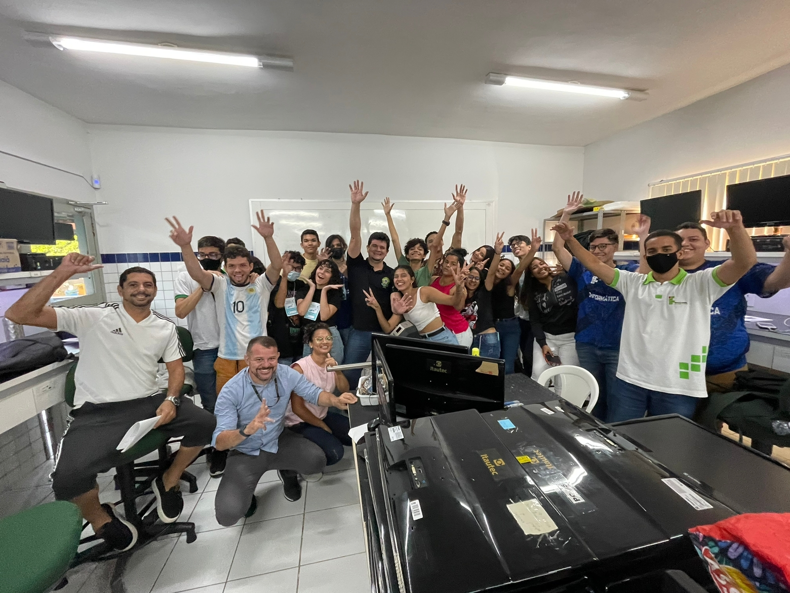
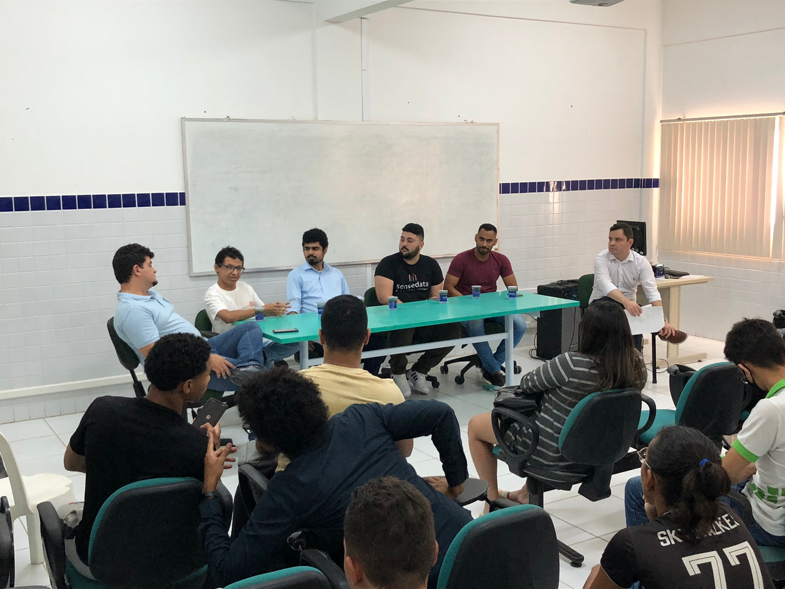
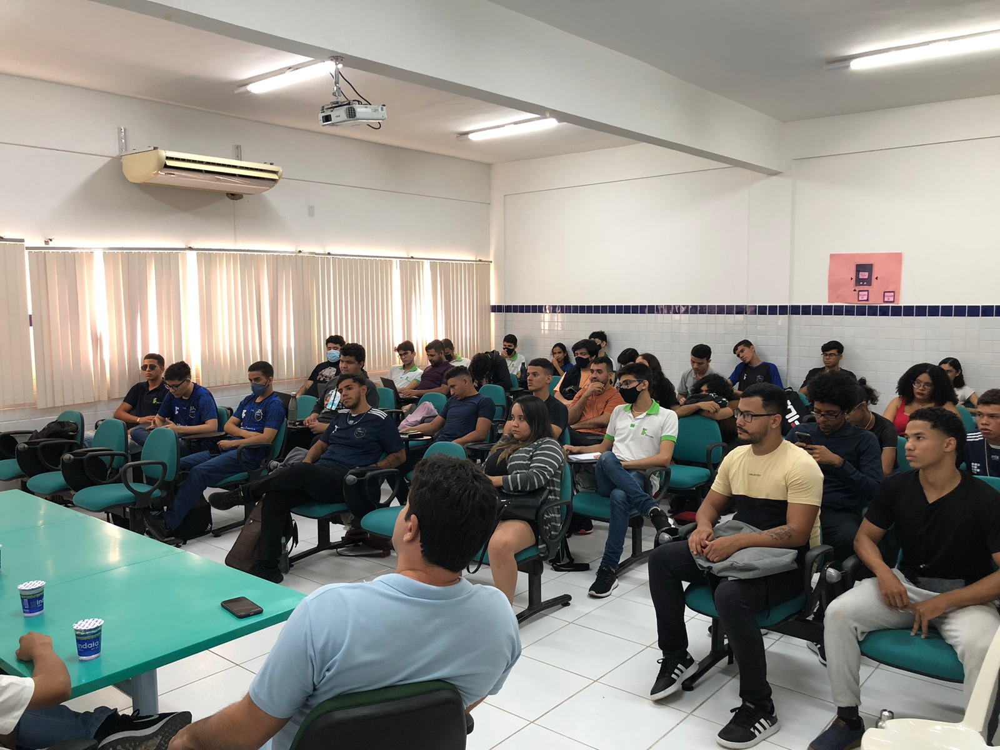
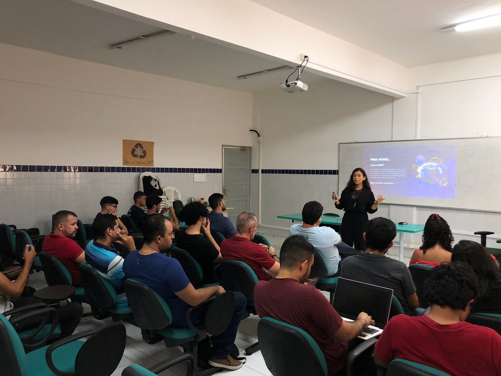

SETIC
Seminário de Tecnologia da Informação e Comunicação
Evento científico que visa a disseminação de conhecimentos da área de TI e propõe uma troca de experiências entre profissionais.
O evento geralmente conta com:
- Palestras
- Mesa redonda : troca de experiencias, perspectiva e oportunidades no mercado de trabalho
- MIT-SGA: Sessão de pôsteres SIP E TAL
- Minicursos
- Campeonatos de games
*Realização da inscrição para os eventos via suap
SETIC - 2022
Tema: "Dos Cabos à Nuvem"
SETIC - 2019
Tema: Bioeconomia e tecnologias para o desenvolvimento sustentável
SETIC - 2018
Tema: Ciência para a redução das desigualdades
SETIC - 2018
Tema: Ciência para a redução das desigualdades
SETIC - 2017
Primeira Setic
Imagens da Setic de 2022





